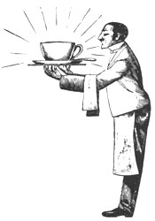
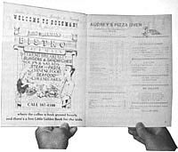
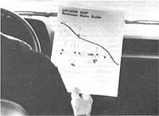

Telling people where to get a good meal can turn into a profitable part-time home business.
I'm not exactly a member of the Hearst dynasty, but I can honestly say that I earned $900 last year from my own publishing business. Better yet, I invested almost no money of my own and only 60 hours of spare time in the whole enterprise. I publish a menu guide, and I've yet to see a more satisfying and risk-free money-maker.
A menu guide is what you probably wished you had in your hands the last time you checked into a motel on unfamiliar turf. It's a booklet that answers the traveler's perennial question, Where do I go to get a good meal? A menu guide is also one of those rarest of creatures: a piece of advertising that's not only fun to look at, but immediately useful to the possessor.
In it, readers find the actual menus offered by local restaurants, as well as their business hours, addresses, phone numbers, and positions on a locator map. This sort of advertising doesn't just tease - it delivers!
Having said all that, I must remind you that I'm talking specifically about my product, the Bozeman Menu Guide . Similar booklets are sold in some large cities, but my little creations are paid for and distributed in a way that reflects conditions in Bozeman, Montana, which has a population of 25,000. So bear in mind, please, that I'll be talking about a small-city adaptation of a big-city idea.
Three years ago, when I began planning my first guide, I asked a friend, "What tourist would buy a Bozeman-size booklet when he or she could skim through it at a bookstall, pick out a restaurant, and put the pamphlet back on the rack?"
"Nobody would pay for it," my friend answered, "but lots of people might look at it. So get the restaurants to finance the whole deal, and then distribute free copies to motels. That way, thousands of hungry folks will see them over the course of a year. And I don't see any reason why the restaurants wouldn't pay in advance for that sort of advertising." By golly, that solved my first (and worst) problem!
Of course, I still had to persuade the local motel people to cooperate. I wasn't too worried, though. After all, the guides would be free to them and would provide a service to their customers. And the motel owners did cooperate - with the exception of those whose places had in-house restaurants. Those business people wanted nothing to do with a publication that might draw clients away from their dining rooms, and I couldn't blame them for their attitude. However, this disappointment was more than made up for by the eagerness of the people whose establishments didn't offer meals. In the end, I managed to line up nine motels with a total of 400 rooms.
Knowing a home for my booklets was assured gave me the gumption to go on to the next step. First, I counted every restaurant in Bozeman. Then, from that total I subtracted the big national chains, since I wanted my guide to focus on local businesses . . . and maybe even give them a chance to compete with the monstrous advertising budgets of the "big guys."
I was able to turn up almost 50 local eateries, as well as 20 chains. That's a heap of grub-peddlers for a place this size, but we're a tourist and university town, and I did count every last sandwich shop in my effort to get some figures together for a trip to the printers. I wanted to know how many potential pages they should estimate for. I'd already decided to sell only full-page ads, so the most wildly successful book would run 50 pages, provided I ignored the chains. Realistically, I decided to have my costs (which are figured by the sheet) estimated for 40, 24, and 12 pages.
I couldn't be absolutely sure of how many copies I wanted, of course, until I knew the costs. However, since printers' per-page prices drop as the number of copies ordered increases, I had to give them a ballpark figure. I would publish only one edition a year and knew I'd need replacements to keep each room stocked, so I pulled the number 1,500 out of the air - a good guess, as it turned out. Then, after selecting some nice, mid-priced paper for the cover and pages, I left a string of printers busily tallying figures and went on to my next step: the selection of a graphic artist to design the cover.
It may seem strange to order a cover before a book even goes into print, but I wanted something concrete to help my potential customers visualize the finished guide. Bozeman is an artsy town, so I had no trouble locating a cover designer and was looking at an attractive rendering of my general concept the very next day. The cost of that piece of artwork ($150) has been the only expense I've ever had to risk myself, and I now know some people who would have done the job for less money . . . or for barter. Still, I had to go with a professional that first year (and since I'm still using the artwork at no additional expense, I'm not complaining).
On the same day that I picked up the cover, I also gathered my printing estimates. The printer I chose offered a good reputation along with great prices, and I was able to use those figures to come up with a price per page to charge my advertisers.
The formula was simple: I just multiplied the printer's per-sheet estimate by two. That figure was large enough to absorb hidden costs and to give me a decent profit. The hidden costs I anticipated were such things as reduction charges (to bring a big menu down to my 8-1/2" X 11" booklet size) and typesetting (to add a restaurant's name, phone number, and address to menus missing these bits of information). Anyway, I now had a nice round figure to charge the restaurants (it was $100 the first year, and I've since raised it to $125), a beautiful cover to show, and almost enough preparation to start selling.
Maybe I'm too fussy, but I still felt the need for one more security blanket before facing my first restaurant manager: a typed sheet listing the names of my distribution motels, my name and phone number, a projected readership figure, and a little blurb about how wonderfully targeted to hungry travelers the menu guide would be. I obtained the figure I wanted most, the readership estimate, by converting the year-round occupancy rate for Bozeman motels (a percentage gathered from the chamber of commerce) into a decimal (63% = .63) and then multiplying that decimal by the total number of rooms I had lined up (.63 X 400). Then I multiplied that sum by 1.5, a rough estimate of the average number of people in an occupied room. When the resulting figure was multiplied by the days in a year, the result yielded was an impressive 137,970 readers! As I say, I may be fussy, but it sure didn't hurt to bring the image of 137,970 hungry tourists into that first eatery.
SELL!
Have you ever felt your stomach doing gymnastics while your palms were practically squirting sweat? That's the way I felt on my first selling day. I was dressed to the neck (oh, that tight collar!) in an outfit I used to call my marrying-and-burying suit. Now I know that a clean pair of cords and a nice shirt would have been spiffy enough for this part of the country, but there are plenty of things I know now that I didn't know then!
I used to think, for instance, that the telephone was a salesperson's best friend. Not anymore! Sure, you can make appointments with a phone, but nothing beats the personal touch when it comes to pitching sales. Nowadays I almost never use the telephone. Instead, I stick my head in the door and ask, "Do you have a couple of minutes?" If the answer is no, I make an appointment. It sure beats being put on hold . . . or being told you'll be called back (and wasting time waiting for the call) . . . or, worst of all, being asked to explain your business plan over the phone.
OK, so much for the technique of selling. What about results? Let me just say it's a good thing I doubled the printer's per-page estimate to figure my prices, or I wouldn't have done too well. As it was, I worked about 80 hours that first year, sold 12 pages, and made $400 - not bad at all, to my way of thinking, especially since I held another, full-time, job during the whole process.
However, I've jumped ahead of myself a little with all that talk about profits. In reality, when the selling has been done, you're still a few long yards from the finish line. For one thing, you need to sort out all the bits of information (such as phone numbers) that you picked up with the menus and then get your organized self down to the printer's. For another, there's the "locator map" to design. My wife, Brenda, did that, but be forewarned that it's not a job for a rank amateur. You may need to pay the printer to do it.
The map went on the back cover of the menu guides. I also had it printed on separate sheets of inexpensive paper (I ordered 500 copies) to be given away at motel desks. This would allow travelers to refer to the map while driving, so they wouldn't have to take along the whole menu guide (and forget to bring it back!).
And while you're designing the map and getting organized for the printer, you'll probably be wondering about the places that haven't paid you yet. This is a pay-in-advance business, but many customers like to see something happening before they part with their cash. Oblige them, by all means, by presenting the proof book (a mock-up of how the final product will look) to them for inspection. You'll certainly want to look at it before printing starts, so why not use it to reassure the restaurant people, too? In fact, it's not a bad idea to show the proof book to all of your clients, whether they've paid or not, to avoid misunderstandings later.
Suppose you've collected all the money, the proof looks good, and the presses are ready to roll - is there anything else to be done? No, not really. Just wait (from one to three weeks, probably). Then when the booklets roll off the presses, get them first to the restaurants (one copy each) and then to the motels as fast as you can. (Divide them up in proportion to the number of rooms in each place.) And then take a couple of copies home and celebrate. After all, you're a publisher!
|
|
 |
 |
|
 |
|
|